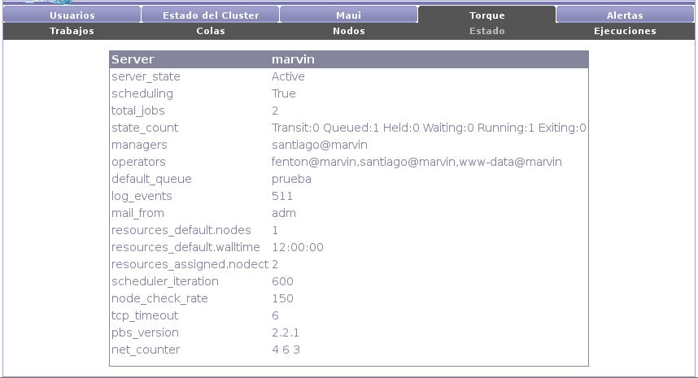

Next: Ejecuciones Up: Torque Previous: Nodos Contents
El submenú de estado muestra información del servicio del nodo maestro de Torque (qserverd).

Se presenta información sobre la cantidad de trabajos en ejecución, el estados de los trabajos (cuantos encolados, cuantos detenidos, cuantos ejecutando, etc.), quienes son los usuarios administradores y operadores de Torque, la versión de Torque que se está ejecutando, etc.